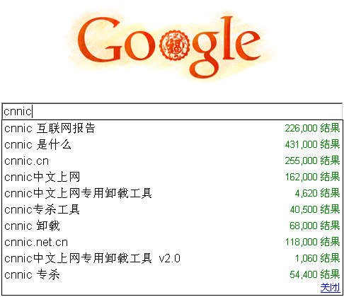

上一个帖子给大伙儿扫盲了数字证书的基本知识。今天再来说一下 CNNIC 有多坏，曾经搞过哪些龌龊、猥琐的事情。
本文的主要目的，就是给 CNNIC 抹黑。这样，大伙才有动力去清除电脑中的 CNNIC 的 CA 证书（至于如何清除 CNNIC 证书，请看“这篇博文”）。反正俺博客的主站点在老美的地盘上（BlogSpot 是 Google 的平台），CNNIC 能奈我何 :)
鉴于 CNNIC 是本文的主角，而有些网友尚不清楚 CNNIC 为何物？顾而俺先要介绍一下它。
CNNIC 是如下几个洋文的缩写（China Internet Network Information Center）。中文叫“中国互联网信息中心”。通俗地说，就是在党国的领导下，对互联网进行管理的一个机构。关于它的权威解释，可以看“这里”。
在维基百科的解释里，它是一个非盈利机构。实际上捏，没这么简单！俺摘录《CNNIC 之手》里面的一段话，给大伙瞧一瞧。
从上面的介绍，大伙儿应该可以看出，CNNIC 是既当裁判员，又当运动员（域名管理机构兼域名注册商）；既当婊子又立牌坊（号称非营利机构却赚大钱，还免税）。
在抖落 CNNIC 的那些个破事之前，有必要先介绍一下它的上级主管单位。也就是 IT 业界响当当的“工业和信息化部”（简称“工信部”）。半年多前，臭名昭著、人人喊打的“绿垻软件”，就是从工信部出笼的（为此事，当时俺还写了篇博文）。光从这就可看出：CNNIC 的上级部门，就不是啥好鸟。俗话说，上梁不正下梁歪。上级主管都这德性，你觉得属下的 CNNIC 能好到哪儿去？
终于开始说正题了。下面凭俺的印象，大致列举它的几个罪状。如有疏漏，欢迎列位看官大伙补充。
从很多年以前，CNNIC 就开始推行中文上网软件。该软件不光是安装的时候悄无声息，而且卸载的时候无比困难。其常年占据流氓软件排行榜的三甲之列。很多网友对它深恶痛绝，到处寻找卸载良策。所以，你在 google 里面输入 cnnic，搜索框的10项自动提示里，有5项（一半）是关于“卸载/专杀 CNNIC中文上网软件”的。有2010年2月11日的 Google 截屏为证：

前几年，大概是为了政绩，CNNIC 开始疯狂追求 cn 域名的注册量，甚至不惜推出了一元钱注册域名的超低价。经过 CNNIC 的大力忽悠，注册数量果然上去了（cn 成为全球注册量最大的国别域名）。但是 CNNIC 只求量不求质的行为，必然导致鱼龙混杂。很多骗子网站、钓鱼网站、挂马网站都用 cn 域名。（反正注册成本很低，打一枪换一个地方）
CNNIC 还经常对它看上的好域名强取豪夺。比如2008年奥运会那会儿，CNNIC 把国内奥运冠军的姓名拼音对应的域名强制收回（相关报道在“这里”）。所以，如果你用自己的名字注册了 cn 域名，你就要开始祈祷了：今后别跟某个奥运冠军的名字一样（哪怕同音不同字，都会被强行收回哦）
2009年12月，CCTV 在焦点访谈中，点名批评 CNNIC 对域名的监管不力，导致大量黄色网站利用“cn 域名”逃避监管（其实 CCAV 也不是啥好鸟，CCAV 和 CNNIC 是狗咬狗的关系）。这下 CNNIC 可傻眼了，赶紧发出通知，要求注册“cn 域名”必须提供“企业营业执照公章”。这等于变相阻止个人注册域名。
要知道，现在的“cn 域名”注册量上千万，且80%是个人注册的。这些已经注册的域名咋办捏？面对记者的提问，CNNIC 的某个家伙声称：
这下，一大堆注册了“cn 域名”的中小网站站长、个人博客博主也跟着傻眼了。为了避免个人域名被强行收回，大伙儿纷纷转投国外的“com 域名”。某网友到 CNNIC 官方站点统计了上个月（2010年1月）的域名删除数量，在短短31天，就有117万域名注销掉了。以此相呼应，“com 域名”的注册数，在2010年1月也猛涨。
前面说到 CNNIC 禁止个人注册域名。其实这招并不能完全杜绝国内的黄色网站，反而是败坏了国内域名注册市场，断了自己的财路。CNNIC 的头头们，估计后来回过神来，把这道理想明白了。所以在不到一个月的时间内，赶紧又出台了另一个声明：
作为一个知名的机构，在不到一个月的时间内，出台的政策前后有180度的大转变。这简直是把咱网民当白痴来糊弄，今后网友们岂能再相信它所说的一切？
说了这么多，再转几个别人的评论给大伙儿围观一下：
《刘韧：CNNIC 的手 @ donews》
《警告！不要在国内注册和使用 CN 域名 @ 月光博客》
《炳叔：CNNIC 毛伟是不是北龙中网的法人？》
《夸张的 CNNIC 注册 CN 域名策略 @ 搜狐博客》
《CNNIC 是中国互联网的耻辱 @ 天涯社区》
《我看 CNNIC 通用网址 @ donews》
俺博客上，和本文相关的帖子（需翻墙）：
《老流氓 CNNIC 的接班人——聊聊“沃通/WoSign”的那些破事儿》
《数字证书的基本知识》
《CNNIC 证书的危害及各种清除方法》
《扫盲 HTTPS 和 SSL/TLS 协议》（系列）
本文的主要目的，就是给 CNNIC 抹黑。这样，大伙才有动力去清除电脑中的 CNNIC 的 CA 证书（至于如何清除 CNNIC 证书，请看“这篇博文”）。反正俺博客的主站点在老美的地盘上（BlogSpot 是 Google 的平台），CNNIC 能奈我何 :)
★CNNIC 是啥意思？
鉴于 CNNIC 是本文的主角，而有些网友尚不清楚 CNNIC 为何物？顾而俺先要介绍一下它。
CNNIC 是如下几个洋文的缩写（China Internet Network Information Center）。中文叫“中国互联网信息中心”。通俗地说，就是在党国的领导下，对互联网进行管理的一个机构。关于它的权威解释，可以看“这里”。
★CNNIC 是个啥类型的玩意儿？
在维基百科的解释里，它是一个非盈利机构。实际上捏，没这么简单！俺摘录《CNNIC 之手》里面的一段话，给大伙瞧一瞧。
－－－－－－－－华丽的分割线－－－－－－－－
CNNIC 说：
中国互联网络信息中心(CNNIC)是成立于1997年6月3日的非盈利管理与服务机构，行使国家互联网络信息中心的职责。
中央编委说：
不知道 CNNIC 是什么组织，但它肯定不是事业单位。
第一，它不符合《中华人民共和国国务院令1998年252号事业单位登记管理暂行条例》所规定的登记条件；
第二，它从来也没有向中央编委提出过登记申请。
工商部门说：
不知道 CNNIC 是什么组织，但肯定不是企业。
它开不出发票，如果它开了发票，那肯定是在非法无照经营。
民政部门说：
不知道 CNNIC 是什么组织，但肯定不是社团。
CNNIC 在不是企业、不是事业、不是社团的情况下，已经经营了4年多。截至2001年7月，它已卖掉12万个cn域名。仅此一项，CNNIC 当年的毛收入就可以达到近4000万元，而且这个数字还在飞速增长之中。另外，CNNIC 还在做中文域名注册、流量认证、通用网址注册、认证培训等十分赚钱的业务。
－－－－－－－－华丽的分割线－－－－－－－－
从上面的介绍，大伙儿应该可以看出，CNNIC 是既当裁判员，又当运动员（域名管理机构兼域名注册商）；既当婊子又立牌坊（号称非营利机构却赚大钱，还免税）。
★CNNIC 的上级主管
在抖落 CNNIC 的那些个破事之前，有必要先介绍一下它的上级主管单位。也就是 IT 业界响当当的“工业和信息化部”（简称“工信部”）。半年多前，臭名昭著、人人喊打的“绿垻软件”，就是从工信部出笼的（为此事，当时俺还写了篇博文）。光从这就可看出：CNNIC 的上级部门，就不是啥好鸟。俗话说，上梁不正下梁歪。上级主管都这德性，你觉得属下的 CNNIC 能好到哪儿去？
★为啥说 CNNIC 是老流氓？
终于开始说正题了。下面凭俺的印象，大致列举它的几个罪状。如有疏漏，欢迎列位看官大伙补充。
◇长期发布流氓软件
从很多年以前，CNNIC 就开始推行中文上网软件。该软件不光是安装的时候悄无声息，而且卸载的时候无比困难。其常年占据流氓软件排行榜的三甲之列。很多网友对它深恶痛绝，到处寻找卸载良策。所以，你在 google 里面输入 cnnic，搜索框的10项自动提示里，有5项（一半）是关于“卸载/专杀 CNNIC中文上网软件”的。有2010年2月11日的 Google 截屏为证：
◇域名管理混乱
前几年，大概是为了政绩，CNNIC 开始疯狂追求 cn 域名的注册量，甚至不惜推出了一元钱注册域名的超低价。经过 CNNIC 的大力忽悠，注册数量果然上去了（cn 成为全球注册量最大的国别域名）。但是 CNNIC 只求量不求质的行为，必然导致鱼龙混杂。很多骗子网站、钓鱼网站、挂马网站都用 cn 域名。（反正注册成本很低，打一枪换一个地方）
◇强行霸占域名
CNNIC 还经常对它看上的好域名强取豪夺。比如2008年奥运会那会儿，CNNIC 把国内奥运冠军的姓名拼音对应的域名强制收回（相关报道在“这里”）。所以，如果你用自己的名字注册了 cn 域名，你就要开始祈祷了：今后别跟某个奥运冠军的名字一样（哪怕同音不同字，都会被强行收回哦）
◇禁止个人注册域名
2009年12月，CCTV 在焦点访谈中，点名批评 CNNIC 对域名的监管不力，导致大量黄色网站利用“cn 域名”逃避监管（其实 CCAV 也不是啥好鸟，CCAV 和 CNNIC 是狗咬狗的关系）。这下 CNNIC 可傻眼了，赶紧发出通知，要求注册“cn 域名”必须提供“企业营业执照公章”。这等于变相阻止个人注册域名。
要知道，现在的“cn 域名”注册量上千万，且80%是个人注册的。这些已经注册的域名咋办捏？面对记者的提问，CNNIC 的某个家伙声称：
cn 域名从未对个人开发注册。
这下，一大堆注册了“cn 域名”的中小网站站长、个人博客博主也跟着傻眼了。为了避免个人域名被强行收回，大伙儿纷纷转投国外的“com 域名”。某网友到 CNNIC 官方站点统计了上个月（2010年1月）的域名删除数量，在短短31天，就有117万域名注销掉了。以此相呼应，“com 域名”的注册数，在2010年1月也猛涨。
◇政策朝令夕改
前面说到 CNNIC 禁止个人注册域名。其实这招并不能完全杜绝国内的黄色网站，反而是败坏了国内域名注册市场，断了自己的财路。CNNIC 的头头们，估计后来回过神来，把这道理想明白了。所以在不到一个月的时间内，赶紧又出台了另一个声明：
正在研究起草有关个人注册 cn 域名的方案，有望在一段时间后允许个人注册和持有 cn 域名。但是民心已失，岂可轻易挽回？正应了某网友对 CNNIC 的嘲讽：
你叫我滚，我滚了；你叫我回来，对不起，已经滚远了。
作为一个知名的机构，在不到一个月的时间内，出台的政策前后有180度的大转变。这简直是把咱网民当白痴来糊弄，今后网友们岂能再相信它所说的一切？
★引申阅读
说了这么多，再转几个别人的评论给大伙儿围观一下：
《刘韧：CNNIC 的手 @ donews》
《警告！不要在国内注册和使用 CN 域名 @ 月光博客》
《炳叔：CNNIC 毛伟是不是北龙中网的法人？》
《夸张的 CNNIC 注册 CN 域名策略 @ 搜狐博客》
《CNNIC 是中国互联网的耻辱 @ 天涯社区》
《我看 CNNIC 通用网址 @ donews》
俺博客上，和本文相关的帖子（需翻墙）：
《老流氓 CNNIC 的接班人——聊聊“沃通/WoSign”的那些破事儿》
《数字证书的基本知识》
《CNNIC 证书的危害及各种清除方法》
《扫盲 HTTPS 和 SSL/TLS 协议》（系列）
版权声明
本博客所有的原创文章，作者皆保留版权。转载必须包含本声明，保持本文完整，并以超链接形式注明作者编程随想和本文原始地址：
https://program-think.blogspot.com/2010/02/about-cnnic.html
本博客所有的原创文章，作者皆保留版权。转载必须包含本声明，保持本文完整，并以超链接形式注明作者编程随想和本文原始地址：
https://program-think.blogspot.com/2010/02/about-cnnic.html